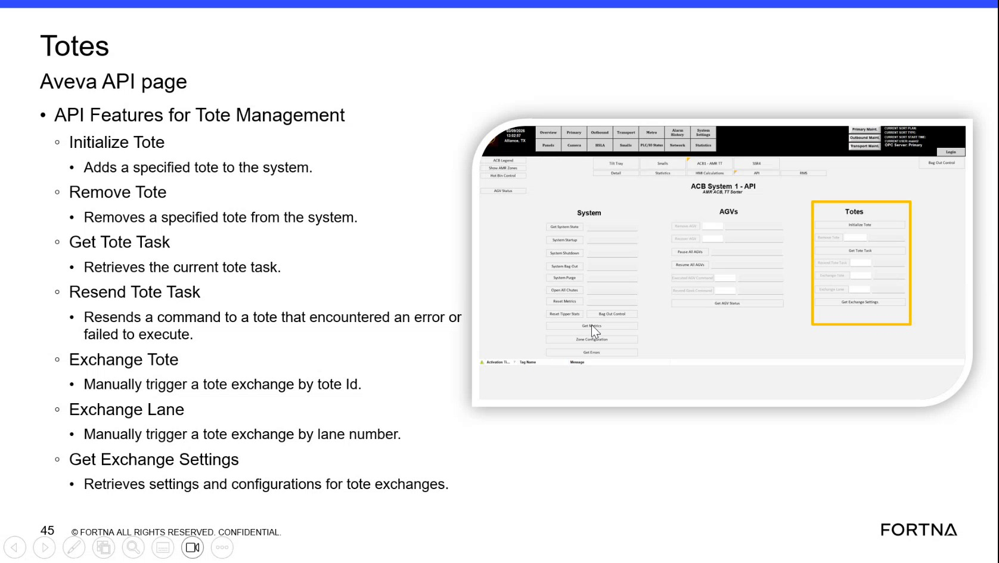

| Procedure ID | proc_check_current_tote_task_and_resend_tote_task_v1 |
|---|---|
| Title | Check current tote task and resend tote task command using the Tote Management API page (Obeyba/Aveva API features) |
| Procedure Type | diagnostic |
| Primary Role | L2_support |
| Support Safe | Yes |
| Capability Tags | wcs_api_responsiveness |
| Access Surface | aveva_hmi |
| Audience Roles | L2_support |
| Failure Pattern Tags | api_unresponsive |
| Validation Status | needs_sme_review |
| Merge Status | source_finalized |
Use the AVEVA/Obeyba “API Features for Tote Management” page to retrieve the current tote task (“Get Tote Task”) and, when a tote command previously errored or failed to execute, resend it (“Resend Tote Task”). Confirm the “Get Tote Task” output updates after resending.
When a tote task command encountered an error or failed to execute and you need to verify the current tote task and resend the tote task command using the Tote Management API features page.

Responsible role: L2_support
Instruction:
Open the AVEVA/Obeyba page titled like “API Features for Tote Management” that contains the controls “Get Tote Task” and “Resend Tote Task”.
Expected result:
The page shows the “Get Tote Task” and “Resend Tote Task” controls.
Stop or Escalate If:
Responsible role: L2_support
Instruction:
On the Tote Management API features page, confirm the login state indicates you are logged in to Obeyba before using “Get Tote Task” or “Resend Tote Task”.
Expected result:
You are logged in to Obeyba (login indicator/prompt is not blocking API actions).
Stop or Escalate If:
Responsible role: L2_support
Instruction:
Use the “Get Tote Task” function on the Tote Management API features page to retrieve the current tote task.
Expected result:
The “Get Tote Task” output populates with the current tote task information.
Stop or Escalate If:
Responsible role: L2_support
Instruction:
If the tote task previously encountered an error or failed to execute, use “Resend Tote Task” on the same Tote Management API features page to resend the command.
Expected result:
The “Resend Tote Task” action is executed (command resent) for the tote that previously errored/failed.
Stop or Escalate If:
Responsible role: L2_support
Instruction:
Run “Get Tote Task” again and compare the output to the prior “Get Tote Task” results to confirm the tote task information updates after resending.
Expected result:
After “Resend Tote Task”, the “Get Tote Task” output reflects the current tote task (task state/values update rather than remaining unchanged in the prior failed/error state).
Stop or Escalate If: